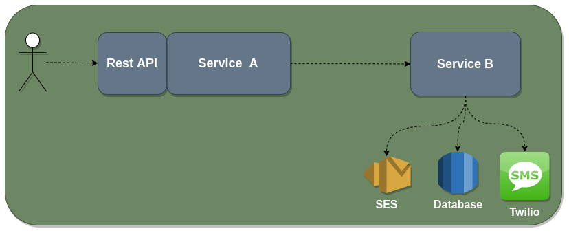
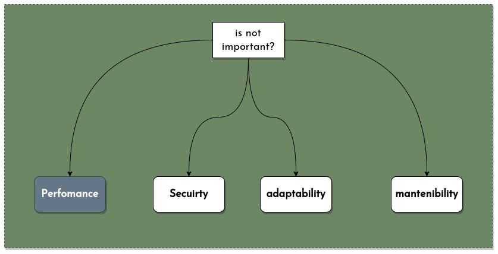

Common architecture
More Really architecture

What happened if..

We need Telemetry
Telemetry
El arte de monitorear correctamente, consiste en enterarse que algo fallo, antes de que se entere el cliente
Telemetry
- Data emit for other system
- handle, transform, store and presentation
Pillars

How to work?

Why AWS Lambdas?

Start project

Datadog

Live
show example in live